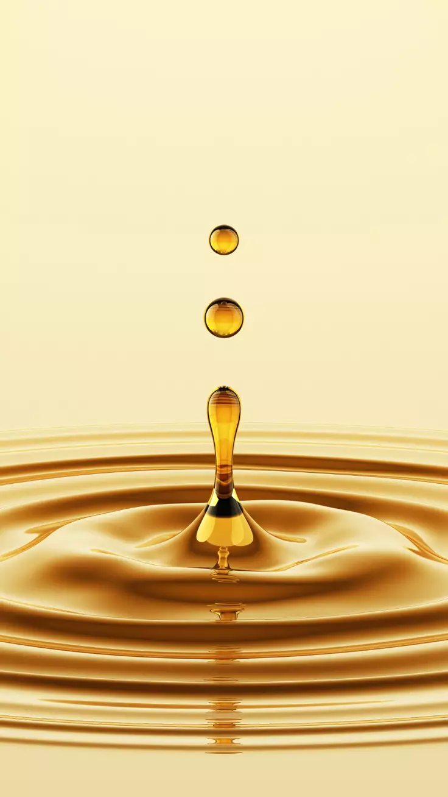
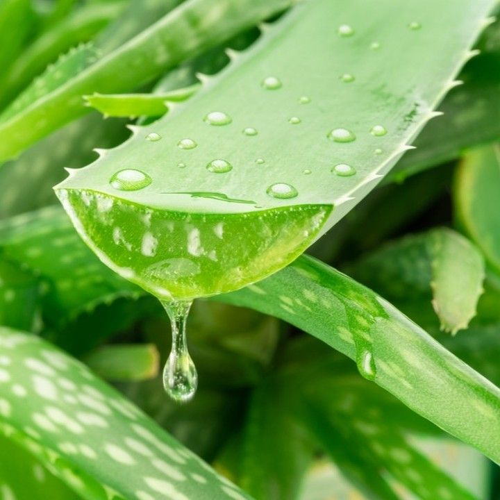
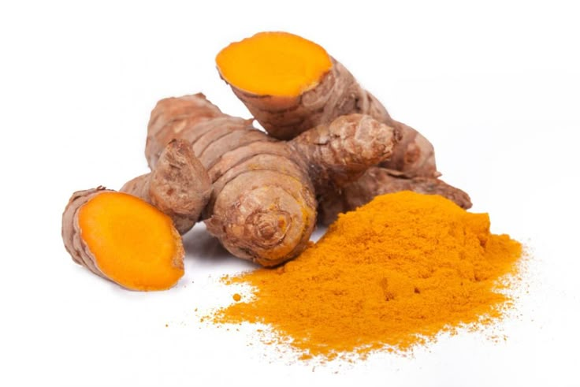
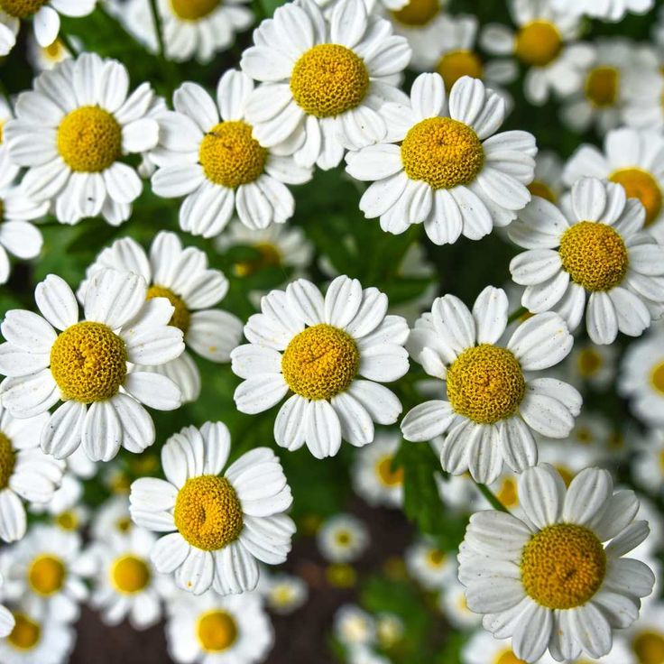

BEAUTY COSMETICS
Bienvenue dans notre univers dedié à la beauté naturelle,où chaque conseil est conçu pour illuminer votre peau avec des solutions simples, authentiques,et inspirées par la nature.Notre mission est de vous guider vers une beauté saine et durable,en vous proposant des astuces inspirées des remèdes traditionnels et des produits naturels.Parce que la peau mérite le meilleur,nous partageons avec vous des recettes maison,des conseils pratiques et des découvertes issues de la sagesse des plantes.Plus qu'un sitede conseils, nous sommes un campagnon de route vers une beauté consciente.Huiles vegetales,masques aux fruits,infusions de plantes...chaque solution que nous proposons est pensée pour révéler l'éclat naturel de votre peau, tout en respectant l'équlibre de votre corps et l'environnement.
1.Huile d'argan

Trésor du Maroc, l'huile d'argan est reconnue depuis des siècles pour ses vertus nourissantes et réparatrices.Extraite des amades de l'araganier,elle incarne l'alliance parfaite entre tradition et efficacité moderne.Sur notre site,nous vous dévoilons comment ce produit naturel peut transformer votre routine beauté.
1.a.Bienfaits principal
- Hydratation intense : nourrit les peaux seches et deshydratées.
- Anti-âge naturel : riche en vitamine E et antioxydants,elle aide à prévenir le viellissement cutané
- Soin capilaire : redonne brillance et force aux cheuveux ternes ou abimés.
- Protection : apaise les irritations et protège contre les agressions exterieures
1.b.Mode d'utilisation
- Pour la peau : appliquer gouttes sur le visage ou le corps, en massage doux
- Pour les cheveux : déposer une petite quantité sur les pointes ou en masque avant shampoing
- Astuce maison : mélanger l'huile d'argan avec du miel pour un masque hydrantant express.
1.c.Recettes traditionnelle
masque éclat visage :
- 1 cuillère à d'huile d'argan
- 1 cuillère à café de miel
- 1 demi-avocat écrasé
Mélanger,appliquer 15minutes,puis rincer à l'eau tiède.
Résultat:une peau douce et lumineuse.
2.Aloe vera

Véritable allié des peaux sensibles,l'aloe vera est une plante miracle utilisé depuis l'Antiquité.Son gel translucide estreconnu pour ses vertus apaisantes et régénérantes,faisant de lui un incontournable des soins naturels.
2.a.Bienfaits principal
- Hydrate en profondeur sans graisser
- Apaise les rougeurs et irritations
- Favorise la cicatrisation des petites plzies et brulures.
- rafraichit la peau après explosition au soleil.
2.b.Mode d'utilisation
- Appliquer directement le gel sur la peau
- Mélanger avec quelques gouttes d'huile végétale pour renforcer l'hydratation
- Utiliser comme base dans un masque maison.
2.c.Recettes traditionnelle
Masque apaisant après soleil :
- 2 cuillère à soupe de gel d'aloe vera
- 1 cuillère à café d'huile de coco
Mélanger,appliquer 20 minutes,puis rincer.
3.Curcuma

Epice dorée aux mille vertus,le curcuma est utlisé depuis des siècles dans la médecine traditionnelle.Ses propriétés anti-inflammatoires et antibactériennes en font un allié precieux pour une peau éclatante et saine.
3.a.Bienfaits principal
- Lutte contre les imperfections.
- Illumine le teint.
- Apaise les inflammations cutanées.
- Protege grâce à ses antioxydant.
3.b.Mode d'utilisation
- Mélanger en petite quantité dans un masque maison
- Associer avec du yaourt ou du miel pour limiter les jaunes.
- Utiliser en cataplasme sur les zones irritées.
3.c.Recettes traditionnelle
masque éclat visage :
- 1 cuillère à café de poudre de curcuma
- 1 cuillère à soupe de yaourt nature
- 1 cuillère à café de miel
Mélanger,appliquer 10minutes,puis rincer soigneusement.
4.Camomille

Douce et apaisante,la camomille est une plante traditionnelle utilsée pour calmer la peau et l'esprit.Ses fleurs délicates renferment des propriétés anti-inflammatoires qui font un soin nature incontournable.
4.a.Bienfaits principal
- Calme les irritations cutanées.
- Apaise les yeux fatigués ou gonflés
- Tonifie la peau en lotion.
- Favorise la détente et le sommeil en infusion.
4.b.Mode d'utilisation
- Préparer une influsion et l'Utiliser commme lotion
- Appliquer des compresses imbibées sur les yeux.
- Mélanger l'infusion avec de l'argile blanche pour un masque purifiant.
4.c.Recettes traditionnelle
Lotion tonique à la camomille :
- Infuser 2 sachets de camomille dans 2ààml d'eau.
- Laisser refroidir,filtrer et conserver au frais
Appliquer matin et soir avec coton.